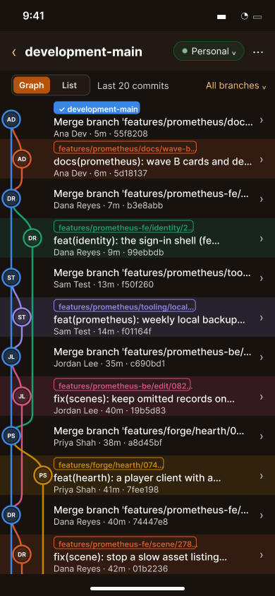
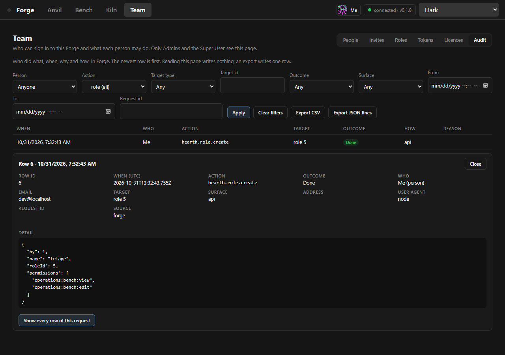
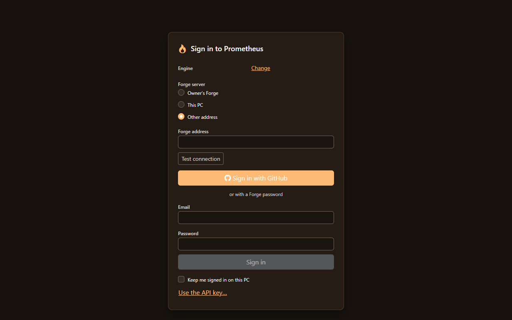

The night I deleted my own Forge
Contents
A little after midnight on Halloween, a routine change to one of my git worktrees deleted most of Forge. Spooky timing. It ended up shaping everything I've done since.
798 files, gone
I keep a lot of worktrees, and they share their dependency folders through Windows junctions, which are links that look like normal folders. Narrowing what one worktree checks out made git follow one of those junctions straight into my main checkout. It took out 798 tracked Forge files, Forge's dependencies, its settings file and the folder holding its keys.
Git brought the tracked files back in seconds. Everything else was harder:
- I rebuilt the settings file with new keys.
- Forge's sign-in key was gone, so every device had to sign in again.
- The key that signs DD-ReForged's licences couldn't be recovered at all. I made a new one, and the desktop app, the phone app and the editor now trust it alongside the old one.
Nothing I'd written was lost, but it was closer than I like. Now a weekly backup copies my untracked secrets, both databases and a verified bundle of every branch and tag, and a quick git-only backup runs before every merge.
Every git write can be undone
A few hours later I was planning the fix. If my own git tool can't protect me from a night like that, it isn't done. DD-ReForged 0.3.16 and 0.3.17 grew a full git toolkit, built around one rule: anything that changes a repo has to be recoverable.
- Every write is recorded. Each one saves a journal line and a snapshot of the refs first.
- Recovery centre. Browse the reflogs, saved refs and the journal, and undo a ref move. Pruning makes you type a word first.
- Lost and found. Dangling commits and dropped stashes can come back.
- Destructive commands got softer.
cleanmoves files to quarantine instead of deleting them, andreset --hardand discarding changes both save a copy first. - Backup centre. Verified bundles and mirrors, kept outside any repo.
- The junction guard. Removing or repairing a worktree now refuses to reach through a link. That's the exact mistake from Halloween, with tests against real git for a junction at a tracked folder and a junction below a junction.
There's also plenty of everyday git: history search with blame and line history, a commit composer, local-only merges, tags, remotes, a panel for stuck operations and conflicts, and a safe force push. An MCP server lets an AI coding assistant work through the same rules, with the protected-branch override off by default. I've pushed the Prometheus repo through DD-ReForged itself, too.
Repairing my own repo was the real test. It has 22 orphaned pack files, and an early version of the repair would have let any tool's garbage collection delete 446 objects that exist nowhere else. I caught that before it ran. Trying hard to break things before merging also found ways that Send to Forge could lose data, three rounds of them. Passing tests alone would have shipped all of it.
Then I walked every workflow in the desktop app with real clicks against a throwaway Forge. No work was lost, but it found bugs worth fixing, including a leftover lock file that stopped the app from opening and a Create tag button that wrote to Forge's copy while the screen said local.
A new look, and boards that travel
0.3.17 also rearranged the app. Every page now fits in one bar, or a left rail if you'd rather, and Wake and the boards get the whole window. Wake opens from its last known graph and only reads what's new, and the branch list stays fast past 1,000 branches. I know because the Prometheus repo had 1,013 of them, until I cleared out 1,004 merged ones.
Boards and cards now work across your own PC and Forge. Cards can hold attachments, images and safe HTML, and a deleted card or board on Forge sticks around for 30 days in case you want it back. A notifications bell and tabs above the toolbar are merged and waiting for the next build.
The phone


The phone got a branch viewer with a continuous commit graph, plus commit details and making or deleting a branch on origin. It also got line comments, long-press to move a card, formatted Markdown and importing a photo into your avatar. App lock now uses the device's own lock and blanks the preview in your recent apps.
I have to be honest here: the newest of this hasn't reached my Fold yet, and app lock has only been tried on an emulator with a PIN. Fingerprint, face and folding are still to test.
Forge grows up


Forge now keeps an audit log of who did what, when and how, and you can check your own under My activity. Almost every Forge page now works on a phone as well.
It's also getting ready to leave my PC. I've had a hosted Forge running in a Podman pod with MySQL, Caddy and Tailscale, reachable only on my private network. I haven't moved over yet. That comes after the testers' pieces are in place: invites that carry a licence, a list of who may sign up, a page for tracking testers, and a Downloads page that only serves builds to people with a licence.
Back in the editor


The plugin platform moved forward as well. Plugins now say where their panels go, add status items, send notifications and get a say before the app quits. They also declare their permissions, and the editor limits their menus, commands and panels to match.
The editor has a real sign-in screen and a new desktop installer, 0.4.0. Forge can also sign in players from a shipped game now, the first small piece of the game itself touching these tools.
Scene saving got more careful too. A whole-scene save keeps records it wasn't sent, a slow asset listing no longer blocks Load and Save, offline deletes survive a reload, and a half-saved script no longer gets imported.
Tools first
I also made a call that day: no new game content until the tools and every app work properly. I don't want to build a game world on tools I can't trust. The full test suite is past 27,000 tests now, and the game comes next once these pass.
Next
Build 0.3.18 and get the newest app onto my phone. Then the last checks before the first testers: a run as a brand new Windows user, the newer MySQL version, and a real build going through the Downloads page.